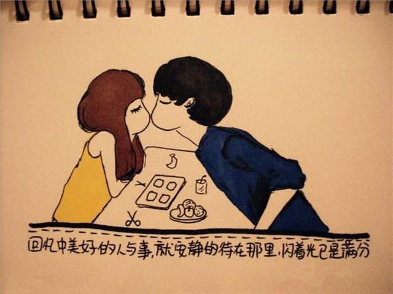

官方二维码
免费情感热线电话
4006-299-520

官方二维码
免费情感热线电话
4006-299-520


上篇文章里我们简单介绍了为什么会有废物测试，那么，面对废物测试，都有哪些，我们应该如何做呢？
下面，橘子情感拿一些例子来给大家解释下
鉴别成功指数:80%
破解成功指数:70%
就一个问题直接提出询问，表面问题的答案可以作为判定好坏的标准，但是只有回答对本质问题才会成功破解测试。
例 女：你经常这样搭讪女生？
潜台词是：你是一个搭讪犯，以前经常这样搭讪女生，把搭讪当做一场游戏，为人不真诚，人品和品质应该不好，不适合交往。
男1：我没有啊，我不太会搭讪。
错误。流于表面，回答的是搭讪的问题。而且答案直接否定，不能给对方信服，是不合适的沟通方式。
男2：我啊，平时闲的时候会吧
错误。承认经常搭讪，正好掉入坑里，经常搭讪女生，属于情场老手，并不适合作为恋爱发展对象。
男3：别闹，我也是有标准的好吧
正确。没有回答是否搭讪的问题，而是从提问题的本质出发，证明自己是真诚的，对于这个选择是慎重的，并不存在女方所担心的问题。
此类测试是废物测试中比较简单的类型，主要目标是劣质对象，我们需要做的就是能够鉴别出来，不要掉进坑里，一般都不会有太大问题。
鉴别成功指数:50%
破解成功指数:50%
故意说出男方的一些问题，给人刁难的感觉，实则背后是对男方其他更为重要问题的考量。
例 女：你太小了，我不能接受比我还小的男朋友
女方潜台词：我不喜欢不成熟的男人，不希望以后的生活中是多了一个需要我去照顾的弟弟或者儿子，我不希望我在感情中是要一直照顾你的，我希望我是被照顾关心的那一个。
男1：我年纪已经不小了，我刚又找到一份工作，感觉不错。
错误。没有意识到废物测试的问题，反而暴露了自己工作经常变动，稳定度低下，把自己的缺点暴露在女方面前。
男2：我年纪小有什么的，不是女大三，抱金砖嘛
错误。没有鉴别出废物测试，过度调侃会使自己显的轻率，恰好与女方追求的稳重相反，从而降低自己的吸引力，女方会判定为不合适。
男3：在我看来，不论年龄大小，女孩子都是需要呵护照顾的那一个。
正确。鉴别废物测试，直接回答测试问题，表明自己的态度和想法，并且给予女方安全感，表明年龄不是问题，态度和行为才是重要的。
此类打压型废物测试其实是带有贬低意味的，一旦出现这种废物测试，很有可能是自己之前的表现就是一般的，从而使女方产生怀疑引发测试。所以我们在一方面破解测试的同时，也要反思自己之前的表现。
鉴别成功指数:90%
破解成功指数:80%
女方故意会说出自己的弱点和缺陷，真实的目的并不是接受构陷，而是考量你对于女方的态度，这时要做的不是顺着女方去讨论缺陷的问题，而是应该表明自己对于女方的态度。
例 女：“我长得不好看，我这个人比较懒，我不喜欢做饭，我很笨，我有点胖，我脾气不太好，我不会照顾男人。
女方潜台词：我是故意这样说的，如果我有缺点你会不会对我改变，如果以后我我有这样的问题，你会不会就变心了。我希望你能包容我的小缺点，一直爱我。
男1：哦，是吗，还好吧，没那么夸张。
错误。掉入废物测试的坑，变相的承认了你是在意这些缺点的，对于真实的意图并不能给出正面的回答，而且有些敷衍。
男2：没事，我不嫌弃。
错误。变相的承认了这些缺点，表示你对这些缺点的在意，并且暴露了自己对于女方的需求，一旦如此说，女方会认为你是不适合的。
男3：你只要好好的把我爱的你照顾好就行了。
正确。首先表示自己不在意这些，并且破解废物测试，对这些都不在意，会一直很关心爱护她。
自黑类的废物测试其实是证明女方是对你有好感的，是属于有兴趣指标IOI的一种类型，在这种时候，对废物测试的破解一方面要打消女方的顾虑，另一方面要继续保持自己的框架，增加自己的吸引力。
鉴别成功指数:30%
破解成功指数:20%
关于性的话题，如果是女方主动提起，很有可能是废物测试。很多人一遇到这种话题，心里就乐开花，但是聊着聊着就被女生拉黑了，所以这个也是鉴别成功指数低和破解成功指数低的一种类型。我们应该透过表象看本质。
例 女：你平时看不看片
女方潜台词：你是不是很猥琐的一个人，整天就只想着一些低俗的东西，我不希望和这样的人在一起。
男1：不看的，我从来都不会看这种东西。
错误。没有鉴定出是废物测试，掉入废物测试的坑。一味的去解释表面的问题，只会越描越黑，反而让女方更坚定了对你的负面印象。
男2：偶尔会看，有了你以后就不看了。
错误。掉入废物测试的坑，表面上是好像比较诚实，但是也承认了自己是一个徘徊在低俗趣味上的人，对女方来说，也不符合鉴定的预期，会直接PASS掉。
男3：我早上一般先去跑步然后吃早餐上班，下班之后喜欢出去遛狗或者窝在家里看书看电影，最近在看《解忧杂货店》，感觉还不错。
正确。没有正面回答性的问题，而是通过介绍自己日常的生活，侧面的反应出自己是一个热爱生活积极向上的人，也避开了和女方谈论性话题，而且是一种自己的高价值展示，提高自己的吸引力。
聊“性”话题一定要慎重，因为一旦错误，会比其他的错误更难解决，所以就要学会破解。不要轻易的和女方去谈论“性”，可以巧妙的转移到其他方面，待真正成熟的时候再聊“性”也不迟。
鉴别成功指数:60%
破解成功指数:60%
女方会主动示弱，并不是在说自己是多么的弱小，求得可怜和同情。而是内在来说，是希望看你是不是在意，爱护她的，是求得安慰的。
例 女：都是我不会做饭，把厨房弄的一团糟，自己也被滚油烫到了。
女方潜在词：我本意是好的，但是我也受伤了，你是在意我还是会怪我。
男1：厉害了，666
错误。没有任何的实际意义，也没有任何的态度表明。不关注于女方，表现的不是对女方的在意，会直接被踢出局。
男2：哦，那以后就不要做饭了。
错误。关注的点并不是女方希望得到的回答，也没有表示出态度的问题，会使女方对你的真诚度产生怀疑。
男3：用冷水或者自来水冲着，如果还比较严重我可以下班顺路给你送一下烫伤药。
正确。给出实际可行的解决办法，并且适时的表明自己的态度，但是没有暴露自己的需求，是正确的回答。
女方这种示弱型的测试也是兴趣指标IOI的一种，所以我们一定不能在关键时刻出现失误。但是很多人就会直接表示出自己很关心很在乎，急于暴露自己的需求，这也是示弱型测试的一个坑，注意要稳住自己的框架，保持自己的气度，做到有礼有节。
关于两性之间的沟通，其实还有很多的因素会影响最终的事态走向，橘子情感从业多年以来，对于沟通也是自成一套，帮助近万例的男女成功收获幸福。
{kind=link}